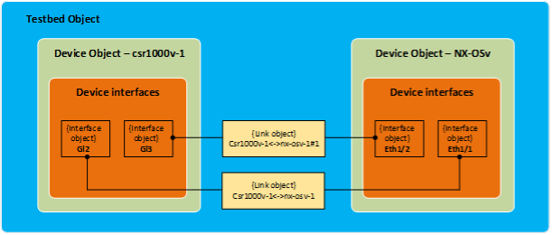

Step 4: Run PING to Verify Reachability¶
Value Proposition: In this test case we must test reachability between devices (nx-osv-1 and csr1000v-1) using the ping command.
The high-level logic of the tests will be the following:
Connect to each device in the testbed.
Find the links between nx-osv-1 and csr1000v-1.
Collect the IP addresses from both ends of these links.
Run the ping commands from nx-osv-1 for IP addresses, discovered in the previous step.
Let’s connect to the pyATS shell and check our idea:
pyats shell --testbed-file pyats_testbed.yaml
Input the following code into the pyATS shell:
csr = testbed.devices['csr1000v-1'] nx = testbed.devices['nx-osv-1']
pyATS has a find_links(device_name) method to find all the links between two devices in the topology. Let’s find the links between csr1000v-1 and nx-osv-1.
nx.find_links(csr)
Observe the output:
In [2]: nx.find_links(csr) Out[2]: {<Link object 'csr1000v-1-to-nx-osv-1' at 0x110a114c0>, <Link object 'csr1000v-1-to-nx-osv-1#1' at 0x110a11520>, <Link object 'flat' at 0x110a114f0>}
Exit the pyATS shell using the exit command.
Before studying the code and running the next script, let’s dive into the details of how information about a topology is stored in a testbed object (see the illustration that follows for a graphical representation of the explanation).
Things to know about the structure of the testbed object (created from the testbed YAML file specified: testbed.yaml):
The pyATS Testbed object contains the Python dictionary devices.
Elements of the devices dictionary are the Device objects.
Each object in the devices dictionary stores a dictionary with a key called interfaces (contains interface objects).
Each interface object stores the link object.

The Testbed object is the top container object, and it contains all the testbed devices and all the subsequent information that is generic to the testbed.
Device objects represent physical and/or virtual hardware in a testbed topology.
Interface objects represent a physical/virtual interface that connects to a link of some sort (for example, Ethernet, ATM, Loopback, and so on).
Link objects represent the connection (wire) between two or more interfaces within a testbed topology.
Let’s check the structure depicted above using our topology. We will find all the connected links between nx-osv-1 and csr1000v-1.
Note
We can get the value of an attribute for each object. For example, we can get a link that belongs to an interface object by calling a link attribute. We can also reference interfaces which belong to this link, by calling the interfaces attribute in step 6 (see code below).
pyats shell --testbed-file pyats_testbed.yaml
Paste the following snippet to pyATS console:
Place the following iPython command at the beginning of the code:
%cpaste
Copy and paste the code into the pyATS console:
csr = testbed.devices['csr1000v-1'] nx = testbed.devices['nx-osv-1'] links = nx.find_links(csr) for link in links: print(f'#{link}') for link_iface in link.interfaces: print(f'##{link_iface}') print(f'###link_iface.ipv4 = {link_iface.ipv4}, {type(link_iface.ipv4)}') print(f'###link_iface.ipv4.ip = {link_iface.ipv4.ip}, {type(link_iface.ipv4.ip)}')
End the code with
--.Refer to the command output:
#Link csr1000v-1-to-nx-osv-1: represents interfaces of all devices connected to the first link between csr1000v-1 and nx-osv-1.
#Link flat: represents interfaces of all devices (asav-1, csr1000v-1, nx-osv-1) connected to a management network.
#Link csr1000v-1-to-nx-osv-1#1: represents interfaces of all devices connected to the second link between csr1000v-1 and nx-osv-1.

Open the file task3step4.py in Nano editor:
nano task3step4.py
Review the content of the PingTestcase test case, and look at the def setup(self) function. The code in this function follows the logic used in the previous step:
Get all the links between nx-osv-1 and csr1000v-1 (nx.find_links(csr).
Get interfaces for each link (for iface in links.interfaces), and append its IPv4 address (iface.ipv4.ip) into the list dest_ips, to use them further in ping commands.
To exclude management IP addressing space, there is a way to check whether an IP address on a link is from a management address space (if dest_ip not in mgmt_net). If an IP address is from a management IP address, it’s not appended to the list dest_ips.
Note
Note that the IP address in the link_iface.ipv4.ip object is of the IPv4Address type, so we can check whether it overlaps with IPv4Network without any conversion of type (hence if dest_ip not in mgmt_net is used).
The code of the setup(self) function is shown below:
# Management network IP range mgmt_net = IPv4Network('198.18.1.0/24')
# Find links between NX-OS device and CSR1000v links = nx.find_links(csr) for link in links: # process each link between devices for link_iface in link.interfaces: # process each interface (side) of the # link and extract IP address from it dest_ip = link_iface.ipv4.ip # Check that destination IP is not from management IP range if dest_ip not in mgmt_net: LOGGER.info(f'{link_iface.name}:{link_iface.ipv4.ip}') dest_ips.append(link_iface.ipv4.ip) else: LOGGER.info(f'Skipping link_iface {link_iface.name} from management subnet')
A ping command for each IPv4 address of both ends of the links between nx-osv-1 and csr1000v-1 is executed in the function def ping(self, dest_ip).
Note
The following information is important to understand the code:
In this task we are not passing Device objects into @aetest.test from @aetest.setup using aetest.loop.mark as it has been done in previous tasks: aetest.loop.mark(self.error_logs, device=devices)
In this task we are passing dest_ip one-by-one from the dest_ips list: aetest.loop.mark(self.ping, dest_ip=dest_ips)
To get a Device object we call the self.parent.parameters attribute: nx = self.parent.parameters[‘testbed’].devices[‘nx-osv-1’]
The string returned by a ping operation is shown below. The field that must be extracted is
0.00%.:5 packets transmitted, 5 packets received, 0.00% packet loss
To check this field, we use a regular expression, which extracts the packet loss from the ping command’s output. If the loss rate is less than 20%, then the test case should pass successfully:
nx = self.parent.parameters['testbed'].devices['nx-osv-1'] try: result = nx.ping(dest_ip) # ... else: m = re.search(r"(?P<rate>\d+)\.\d+% packet loss", result) loss_rate = m.group('rate') if int(loss_rate) < 20: self.passed(f'Ping loss rate {loss_rate}%') else: self.failed(f'Ping loss rate {loss_rate}%')
Exit Nano without saving by pressing Ctrl + X
Execute the created test script and check the results section; all pings should succeed:
python task3step4.py --testbed pyats_testbed.yaml

{kind=link}
Section author: Luis Rueda <lurueda@cisco.com>, Jairo Leon <jaileon@cisco.com>